攻略本 › 同棲、新婚、アルバム、家族
同棲、新婚、アルバム、家族の攻略
同棲から夢の家、新婚、ヒロインの好み、家事、赤ちゃんと育児、子どものエンディング5種、家族アルバム、離婚まで、家族コンテンツの総まとめ
- 🏠 同棲は交際中に家（いちばん安い778万円のワンルームで十分）さえあれば、彼女のほうから提案してきます。承諾すると彼女のメッセージの費用が別れるまでずっと半額です。
- 💐 新婚は結婚後15週以内に彼女の夢の家を買わないと開きません。15週のあいだ毎週ロマンチックなイベントが来て、赤ちゃんの条件（家事）が半分になります。
- 👶 赤ちゃんは結婚15週 + 家事29回（新婚なら15回）+ あふれた好感度30。子どもを大学生まで育てるには生まれてから最低16週、子どものメッセージにきちんと①で答える必要があります。
- 📷 家族アルバムは赤ちゃんが生まれると開き、大学の選択をするとおわりのハンコが押されて閉じます。
- ⚠️ 同棲、新婚は9人だけ、好みは6人だけ、子どもは楓、ソフィー、紗希、麗華の4人にはいません（下の表）。
ヒロイン別にできることをひと目で 🗂️#
まずこの表から見てください。誰と結婚するかを選ぶとき、これが思ったより大きいです。一緒に住めないヒロインと結婚すると、ふたりタブ、新婚、夢の家のエンディングが丸ごとありません。
| ヒロイン | 同棲 | 新婚（夢の家） | 好み | 子ども | 子どもの名前 |
|---|---|---|---|---|---|
| 美咲 | ⭕ | ⭕ リバービューのロフト付きマンション | ⭕ | ⭕ | ソウマ（息子） |
| 彩花 | ⭕ | ⭕ 夜明け湾の新築3LDK | ⭕ | ⭕ | ユイ（娘） |
| 七海 | ⭕ | ⭕ キャッシュのワンルーム | ⭕ | ⭕ | ソウタ（息子） |
| 莉子 | ⭕ | ⭕ レガシーのワンルーム | ⭕ | ⭕ | ヒナ（娘） |
| 優奈 | ⭕ | ⭕ リバービューのリバーサイドのペントハウス | ⭕ | ⭕ | ハヤト（息子） |
| 葵 | ⭕ | ⭕ ホットフィックスの庭の広い平屋 | ⭕ | ⭕ | サクラ（娘） |
| 穂乃果 | ⭕ | ⭕ 夜明け湾の駅前オフィステル | ❌ | ⭕ | ツムギ（娘） |
| 美桜 | ⭕ | ⭕ サーバー山脈のログハウス | ❌ | ⭕ | ユウト（息子） |
| 真由 | ⭕ | ⭕ デバッグの湖畔の別荘 | ❌ | ⭕ | コハル（娘） |
| 楓 | ❌ | ❌ | ❌ | ❌ なし | — |
| ソフィー | ❌ | ❌ | ❌ | ❌ なし | — |
| 紗希 | ❌ | ❌ | ❌ | ❌ なし | — |
| 麗華 | ❌ | ❌ | ❌ | ❌ なし | — |
穂乃果、美桜、真由は開発系インフルエンサーの称号の周回でだけ出会えます。楓はあしながおじさんの称号の周回専用です。楓、ソフィー、紗希、麗華は赤ちゃんの話がまったく出ず、この4人と交際、結婚中ならアルバムタブも見えません。
一緒に住めないヒロインでも、結婚すれば家事は同じように必要です。家事0回の週は好感度 −30、好感度0なら離婚の話が来ます。
家族ルートの全体の流れ 🧭#
- 交際スタート告白を受けて付き合うと（彼女）家族タブに彼女が出ます。片想い、交際の流れはヒロイン共通ルールにあります。
- 家を買う → 同棲投資タブ → 不動産でワンルーム以上ならどの家でも買って2週たつと、彼女があなたと一緒に住んでみたいと言います。
- 結婚デートを重ねてプロポーズを受けます。結婚するとスケジュールからデートの枠が消えて+ 家事を手伝うができます。
- 夢の家 → 新婚15週結婚後15週以内に、彼女がヒントで話していた夢の家を買うと新婚の提案が来ます。
- 好みを満たす（6人だけ）新婚のあいだに、彼女がほしがっていた品まで全部買ってあげると私、もう全部手に入れたよ。
- 赤ちゃん結婚15週 + 家事 + あふれた好感度が満たされると赤ちゃんの話が来ます。新婚中は来ません。
- 育児 → 大学毎週の育児の枠と子どものメッセージで育てると、幼稚園 → 小学校 → 中学校 → 高校 → 大学。段階ごとに子どもが進路のメッセージを送ってきます。
- 第100週そのときも結婚中なら、結婚、同棲、新婚、好み、子ども、内助の功のエンディングが一度に記録されます 🎉
同棲 💞#
彼女 + 自分の家（ワンルームから）= 同棲の提案。承諾すると彼女のメッセージの費用が半額、そのかわりほかのヒロインは静かになります。
同棲の提案が来る条件#
| 条件 | 内容 |
|---|---|
| 関係 | 交際中（彼女）。付き合い始めた週の翌週から |
| 家 | ワンルーム、オフィステル、マンション、田舎の家/別荘のどれか1軒を保有（店舗、倉庫、リゾート、農地は家ではありません） |
| タイミング | 家を前から持っていたら付き合ったその週の終わり（最初の締め）にすぐ来ます。付き合ったころかそのあとに買ったなら買った週の翌週の終わりに来ます（買ってすぐは来ません） |
| 回数 | 周回ごとに1回。断ったり既読スルーしたりすると、その周回ではもう来ません |
いちばん安い家はレガシー旧市街のレガシーの家具付きワンルーム 778万円です。ゲームの中の説明にも彼女と一緒に住める最低条件と書いてあります。投資タブ（不動産を含む）は、残高が初めて222万円を超えた週の締めに開きます。
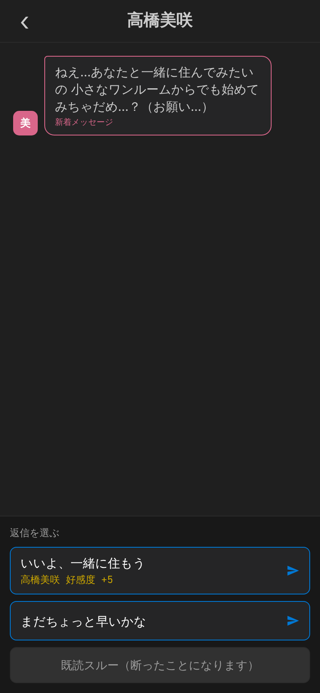
| 返信 | 結果 |
|---|---|
| いいよ、一緒に住もう | 同棲スタート、好感度 +5。ふたりタブが開き、💞 同棲スタートの線が引かれます |
| まだちょっと早いと思う | うん…わかった。今の周回では終わり（ペナルティなし） |
| （既読スルー） | 断ったのと同じ |
同棲すると変わること#
- 💸 半額: 彼女が送ったメッセージでお金のかかる返信は全部半額です。返信の横に💞 同棲効果で半額（元は…）が見えます。ふたりのメッセージ、結婚後の育児のメッセージも彼女が送ったものなので全部半額です。
- 💍 結婚しても続く: 同棲してから結婚すると、半額は離婚までずっと続きます。逆に同棲なしですぐ結婚 → 新婚に行くと半額はありません。
- 🔕 ほかのヒロインは静か: 一緒に住んでいるあいだ（結婚後も含む）、ほかのヒロインのメッセージは来ません。
- 🏡 私たちの家は売れません: 一緒に住んでいる家1軒（夢の家があればその家、なければいちばん安い家）は売却ボタンを押すとねえ…これ売ったら、私たちどこに住むの…？と出て売れません。夢の家ならねえ…ここ、私たちの夢の家だよ…。ほかの物件は自由に売れます。
- 💭 夢の家のヒント: 同棲中は3週ごとにふたりで彼女が夢の家をひとりごとでこぼします。これが新婚の準備の合図です。
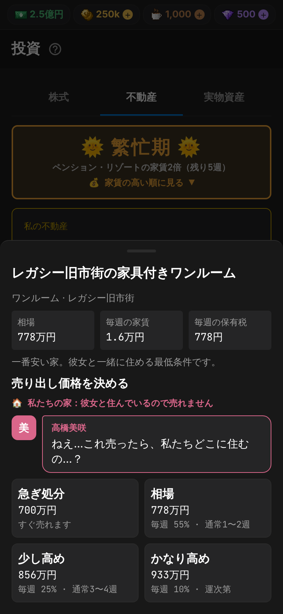
返信の要らないひとりごとが3週ごとに来ます。片想いのときはいちばん近い片想いの相手が最近、一人暮らしの部屋が静かすぎて…誰かが一緒にいてくれたらいいな、交際中で家がなければはぁ…ワンルームでもあれば一緒に住めるのに…🥲。これが見えたらワンルームを1つ買ってあげるタイミングです。
同棲エンディングは周回が終わるときも一緒（同棲中か、そのあと結婚中）である必要があります。途中で別れたり離婚したりすると記録されません。そして同棲なしで結婚すると、このエンディングは永遠に見られません。結婚の前に必ず同棲から始めましょう。
夢の家9軒 🏡#
夢の家はヒロインごとに決まった物件1つです。物件の名前と最初の価格は毎周回同じで、相場で上がり下がりします。同じ地域の似たほかの物件は認められないので、名前を必ず確認しましょう。
| ヒロイン | 夢の家（物件の名前） | 地域 | 種類 | 最初の価格 |
|---|---|---|---|---|
| 莉子 | レガシーのワンルーム | レガシー旧市街 | オフィステル | 1,889万円 |
| 穂乃果 | 夜明け湾の駅前オフィステル | 夜明け湾ニュータウン | オフィステル | 2,556万円 |
| 七海 | キャッシュのワンルーム | キャッシュ港 | オフィステル | 2,778万円 |
| 美咲 | リバービューのロフト付きマンション | リバービューシティ | オフィステル | 3,000万円 |
| 真由 | デバッグの湖畔の別荘 | デバッグの森 | 田舎の家/別荘 | 8,889万円 |
| 美桜 | サーバー山脈のログハウス | サーバー山脈 | 田舎の家/別荘 | 1.2億円 |
| 葵 | ホットフィックスの庭の広い平屋 | ホットフィックス海岸 | 田舎の家/別荘 | 1.5億円 |
| 彩花 | 夜明け湾の新築3LDK | 夜明け湾ニュータウン | マンション | 2.1億円 |
| 優奈 | リバービューのリバーサイドのペントハウス | リバービューシティ | マンション | 2.7億円 |
夢の家も家なので、同棲の提案の条件としても認められます。莉子、穂乃果、七海、美咲のように2,000万円台なら、ワンルームのかわりにすぐ夢の家を買って、同棲 → 結婚 → 新婚を一度に準備するのが得です。結婚前に買っておいた夢の家も新婚の条件を満たします。
新婚 💐#
結婚 + 15週以内に夢の家 → 新婚の提案を承諾 → 新婚15週。毎週ロマンチックなイベント（お金がたくさんかかる）、赤ちゃんの条件が半分。
新婚の提案の条件#
| 条件 | 内容 |
|---|---|
| 関係 | 結婚中、結婚した翌週から結婚後15週まで |
| 家 | 彼女の夢の家を保有。結婚後に買ったなら、買った週の翌週の終わりに提案が来ます |
| 同棲 | 不要（同棲していなくても夢の家さえあれば来ます） |
| 回数 | 周回ごとに1回。今はちょっと…や既読スルーなら終わり |
提案はねえ！あなたとラブラブな新婚生活を送りたい！新婚旅行行かない？です。いいね、新婚旅行行こう！（好感度 +5）を押した瞬間に💐 新婚スタートの線が引かれ、名前の横の表示が新婚さんに変わります。15週たつとまた妻です。
提案は夢の家を買った週の翌週の終わりに来ますが、それが結婚後15週を過ぎると来ません。結婚13週目のうちに買っておきましょう。いちばん安全なのは結婚前に買っておくことです（そうすれば結婚の翌週にすぐ来ます）。
新婚15週: 毎週来るロマンチックなイベント#
新婚のあいだふたりに毎週1つずつ、15種類の新婚のセリフが来ます。1番目の返信は（ほとんど）お金を使って好感度を大きく上げ、2番目の返信は好感度 −15〜−20です。
| セリフ（彼女） | 1番目の返信 | お金 | 好感度 |
|---|---|---|---|
| 夜に川辺行こうって？なにか隠してるでしょ？ | 🚁 ドローンで夜空に名前を | −1,111万円 | +30 |
| 海風気持ちいい…今日はなんだか特別な日な気がする。 | 花火を用意したんだ | −333万円 | +21 |
| 海の上で夕日を見たらどんな気持ちなんだろう。 | ヨットを貸し切ったよ | −222万円 | +19 |
| 結婚指輪に傷がついちゃった…すごく悲しい。 | 新しい指輪作ろう | −167万円 | +16 |
| 急に荷物まとめてって…どこ行くの？！ | 南の島に行くよ | −133万円 | +15 |
| 気球、もう1回の結婚式、花、スイートルーム、キャンドルディナー、写真スタジオ | （それぞれ） | −8.9万〜−33.3万円 | +4~+5 |
| 100日のプレゼント、灯籠祭り | （それぞれ） | −5.6万円、−1.1万円 | +3 |
| 歌って、一生愛してくれるよね？ | （それぞれ） | 0 | +3 |
同棲のセリフは既読スルーしても何も起きませんが、新婚のセリフを既読スルーすると2番目の返信（−15〜−20）として扱われます。お金がなくても、せめて0円のセリフには答えましょう。
同棲を経て結婚したなら新婚のセリフも半額です（ドローン −556万円）。ここで大きく上がる好感度は100を超えるとあふれた好感度として貯まり、赤ちゃんの条件（あふれ30）と関係の特典を一度に満たしてくれます。
新婚旅行（島のリゾートがあれば）#
新婚中にクラウド島やクッキー諸島にペンション/リゾートを持っていると、その週のふたりのメッセージでねえ！！新婚旅行は私たちの島のリゾートにしよう 🏝️が先に来ます。行こう、新婚旅行！ −222万円（同棲カップルは半額）、好感度 +10、ストレス −20 / 仕事片付けてから行こう 好感度 −2。このメッセージは既読スルーすると好感度 −15なので、お金がなければ仕事片付けてから行こうだけでも押しましょう。島が開く条件は投資の攻略に。
ふたりタブ 💬#
メッセンジャーの上の行のふたりは、彼女と2人だけのトークルームです。同棲を始めるか新婚が始まると開き（その前は🔒 同棲か新婚を始めると開きます。）、離婚すると閉じます。
| 時期 | 来るもの | 既読スルーすると |
|---|---|---|
| 同棲中（交際） | 日常のセリフ週1つ（60種類）+ 3週ごとに夢の家のヒント | 何も起きない |
| 同棲カップルの結婚後15週 | 日常のセリフ週1つ（新婚の提案を断っていないとき） | 何も起きない |
| 新婚15週 | 新婚のセリフ週1つ（15種類）+ 好みのひとりごと | 2番目の返信（−15〜−20） |
| そのあと（結婚中） | あの頃はよかったね 😌1回 → あの頃はよかったね…の線、タブは静か | 返信が1つだけなので答えたのと同じ（好感度 +3） |
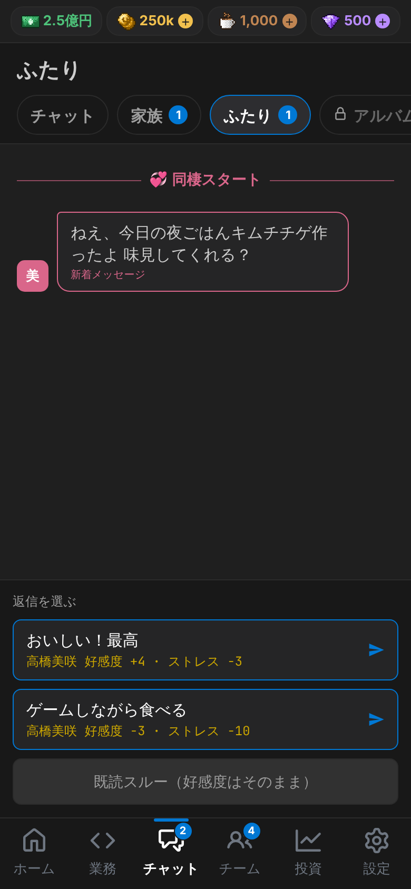
ヒロインの好み: 夢を全部かなえてあげる 🌟#
日常ヒロイン6人（美咲、彩花、七海、莉子、優奈、葵）は夢の家のほかにもほしいものがあります。新婚のあいだ、まだないものを毎週1つずつふたりでひとりごとで言ってくれます。新婚中に夢の家 + 全部をそろえると、黄色い字で私、もう全部手に入れたよ。夢の家も…夢の物も…全部…そしてあなたも…愛してる。来世も一緒に暮らしたい❤️が1回来て、好みのエンディングが開きます。
- 必要なもの
- 限定フィギュア（12.2万円）、レトロゲーム機（50万円）、限定スニーカー（26.7万円）
- 夢の家を含む合計
- 約2,867万円（最初の価格）
- 必要なもの
- 書斎用のワンルーム（夢の家以外のオフィステルかワンルーム1軒）、ダイバーズウォッチ（422万円）
- 夢の家を含む合計
- 約3,089万円（ワンルーム778万円の場合）
- 必要なもの
- 美術品（1.7億円）、ブランドバッグ（133万円）
- 夢の家を含む合計
- 約2億円
- 必要なもの
- 貸し出す店舗やビル（店舗、ビル、物流倉庫のどれか1軒）、ダイバーズウォッチ（422万円）
- 夢の家を含む合計
- 約3.8億円（いちばん安い店舗レガシーの大学街の店舗 1.7億円の場合）
- 必要なもの
- 別荘（夢の家以外の田舎の家/別荘1軒）、スポーツカー（相場3,444万円、実際に払うのは約4,306万円）、キャンピングカー（相場889万円、実際は約988万円）
- 夢の家を含む合計
- 約4.1億円（いちばん安い本土の別荘デバッグの湖畔の別荘 8,889万円の場合）
- 必要なもの
- クラシックカー（3.1億円）、レトロゲーム機（50万円）
- 夢の家を含む合計
- 約4.6億円
- 莉子は同棲用に買った778万円のワンルームがそのまま書斎として認められます（夢の家ではないワンルーム、オフィステルならOK）。莉子のルートはワンルーム → 夢の家 → 腕時計で完了！
- 価格は実物資産、不動産の最初の価格が基準です。実物資産は基準相場が毎週少しずつ動き、腕時計、スニーカー、ゲーム機は +1%、クラシックカー +1.2%、美術品、バッグ +0.8%、フィギュア +0.5%ずつ上がり、スポーツカー（−1.2%）、キャンピングカー（−0.6%）は下がります。上がるものは早く、新車は遅く買うのが得です。新車は出荷価格が付くので、スポーツカーは相場の1.25倍、キャンピングカーは約1.11倍を払って買います（見える相場は中古の価格です）。
- 判定は物を買う瞬間と週を進めるときにします。最後の1つを新婚15週のうちに買うと、すぐメッセージが来ます。
好みは新婚のあいだだけ判定します。新婚15週が終わったあとに全部集めても何も起きません。高いヒロインなら、新婚の前にお金（投資）を先に貯めておきましょう。そしてエンディングは周回が終わるときも結婚中である必要があります。
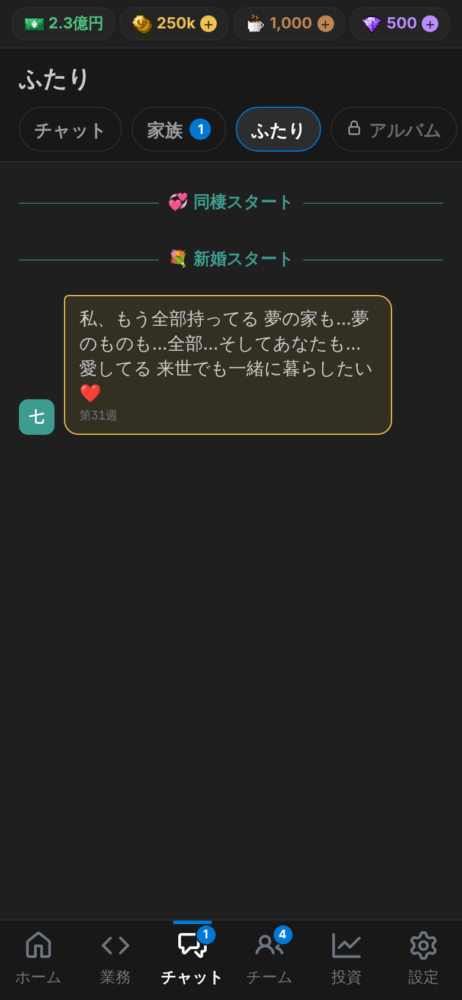
結婚生活: 家事 🧺#
結婚するとスケジュールからデートの枠が消えます。そのかわり曜日の枠を押すといちばん上に+ 家事を手伝うのチェックができます。その日の活動に加えてするものなので枠を取りません（1日にストレス +3、体力 −3）。
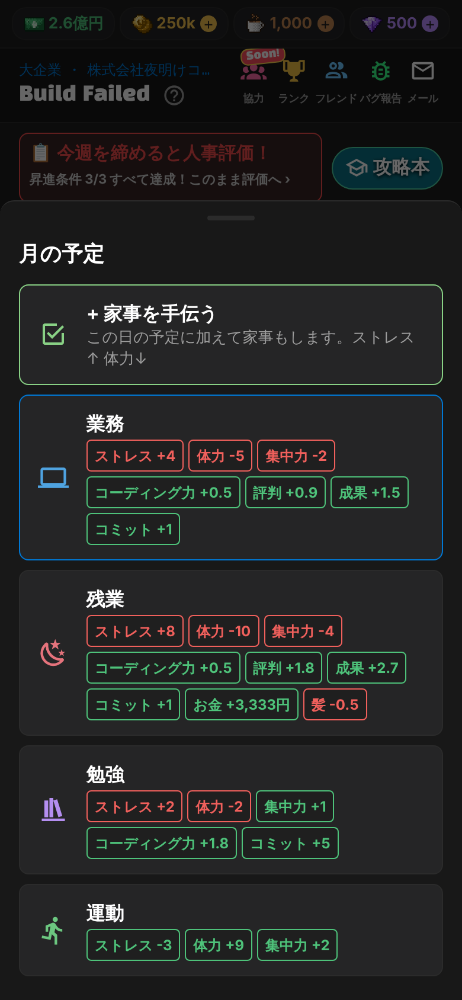
| 状況 | 結果 |
|---|---|
| その週の家事1回以上 | 問題なし。赤ちゃんの条件用の累計回数に足されます |
| その週の家事0回 | 妻の好感度 −30 + 翌週今週の家事、全部私がやったんだけど。お皿1枚も洗ってないよね？（ごめん。来週は俺がやるよ（ストレス +20） +2 / 仕事が忙しくてさ −10） |
| 子どもがいるのにその週の育児0回 | さらに −30 + 今週、子どもの顔一回も見てないよね？（ごめん。今週末は子どもと過ごすよ（ストレス +20） +2 / 今のプロジェクトさえ終われば… −10） |
| 週末の枠に業務 | 週末も仕事？ 好感度 −2 |
| 好感度0 | 離婚の話（下） |
削られる好感度はあふれた好感度から先に減ります。あふれた好感度をたっぷり貯めておけば、忙しい週に家事を1回抜かしても本当の好感度は減りません。ただし赤ちゃんの条件（あふれ30）も一緒に減るので気をつけましょう。
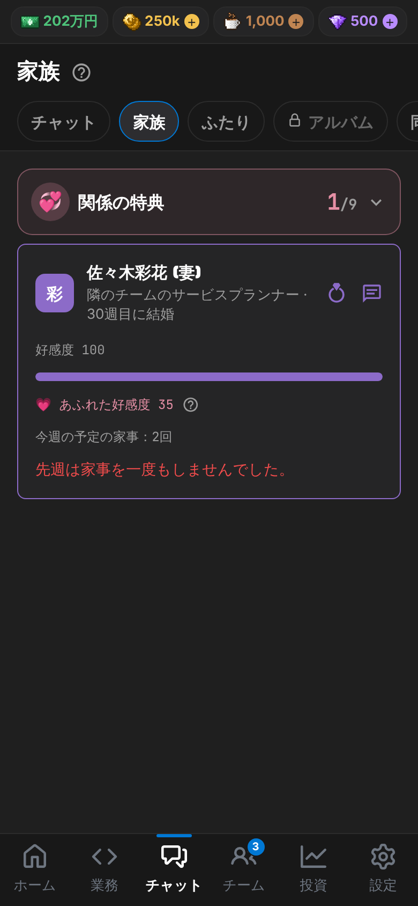
関係の特典（あふれた好感度で付くもの）#
家族タブのいちばん上の関係の特典カードを開くと、今ついている特典が見えます。条件を満たしたものは全部同時に効き、離婚したりキープがバレたりすると全部消えます。
| 特典 | 条件 | 効果 |
|---|---|---|
| 同棲 | 同棲（あふれた好感度は不要） | 彼女のメッセージの費用が半分 |
| 新婚 | 新婚を経験して赤ちゃんの前 | 赤ちゃんの提案までの家事29 → 15回 |
| ときめき | 交際、結婚 + あふれ30 | 毎週ストレス −5 |
| 心強い味方 | あふれ50 | 毎週ストレス −5、集中力 +10 |
| 共働き | 結婚 + あふれ70 | 週給 +50%（楓の周回の特別なお小遣いとは重複しません） |
| 手料理 | 結婚 + あふれ70 | 毎週体力 +10 |
| 燃え尽きの盾 | 結婚 + あふれ80 | 燃え尽きを周回ごとに1回防ぐ（評判の損失なし） |
| 記念日旅行 | 結婚 + あふれ80 | 結婚後13週ごとにストレス −20（業務はそのまま） |
| 家庭的な開発者 | 子ども + あふれ100 | 毎週評判 +3、人事評価 +3 |
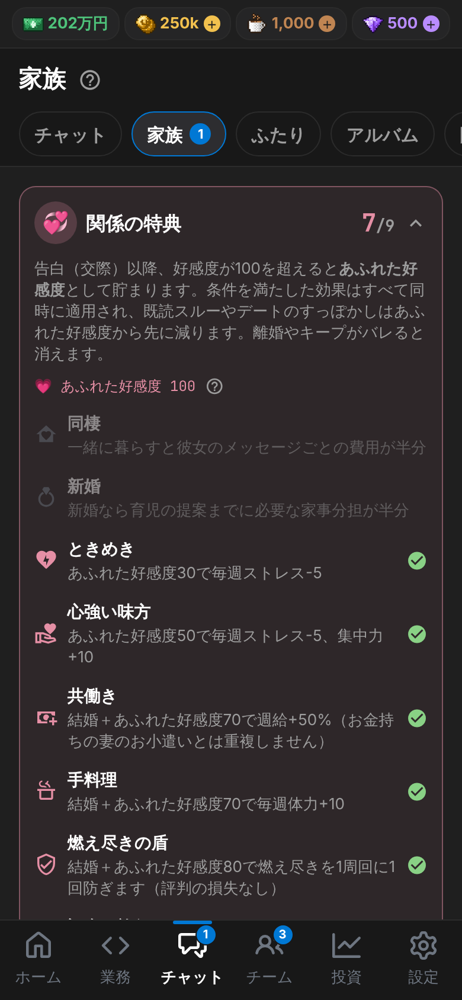
赤ちゃん 👶#
| 赤ちゃんの提案の条件（すべて） | 値 |
|---|---|
| 結婚してから | 15週以上 |
| 今の周回の家事の累計 | 29回（新婚を経験したら15回） |
| あふれた好感度 | 30以上 |
| 新婚の期間 | 新婚15週が終わったあと（新婚中は来ない） |
| 子ども | まだいなくて、断ったこともない |
提案はねえ、あなたに似た赤ちゃんに会いたいな。です。
- 「俺も。2人に似た子どもがほしいな」 → 赤ちゃん誕生、好感度 +10、ストレス +5。名前の横の表示が○○ママになり、スケジュールに育児の枠、メッセンジャーにアルバムが開きます。
- 「俺は2人だけで十分だよ」 → 好感度 −5、たぶん、もうこの話はしないと思う。今の周回では終わりです。既読スルーも断ったのと同じです。
新婚15週が結婚15週の条件とほぼ重なるので1週くらい遅れるだけです。新婚は家事の条件を半分にしてくれて、あふれた好感度も大きく満たしてくれるので、できるならしたほうがいいです。
育児の枠と赤ちゃんの時期のメッセージ#
育児はスケジュールの枠を1つ使います（1日に体力 −5、ストレス −2、お金 −2,222円）。育児1回 = 子どもの成長1です。赤ちゃんの時期は彼女のメッセージが3種類、順番に来ます。
| 彼女のメッセージ | 気づかう返信 | 忙しい返信 |
|---|---|---|
| 今週末は子どもを連れて3人でお出かけしよう！ | −5.6万円、体力 −30、ストレス +30、好感度 +2 | コーディング +10、ストレス +10、好感度 −12 |
| 夜中の授乳、お願いしてもいい？（幼稚園まで） | 体力 −30、ストレス +30、集中力 −10、+3 | 体力 +5、ストレス +10、−15 |
| 今日初めてひとりで立ったよ（1回、幼稚園まで） | 評判 −15、成果 −2、体力 −20、ストレス +20、+2 | 評判 +10、成果 +2、ストレス +8、−10 |
このほか子どもがいるあいだ、初めての言葉（…「バグ」）、深夜3時の授乳とデプロイ通知、保育園の待機47番、パパとノートPCの絵、おばあちゃんの訪問、保育園からの発熱の知らせのような家族のメッセージ6種類がときどき来ます。
子どもの成長、子どもの好感度、子どものメッセージ 🎒#
子どもが次の段階に育つには育児の回数と子どもの好感度の両方が必要です。育児だけ満たして子どもの好感度が足りないと、段階のすぐ手前で止まって🏠 子どもの好感度がNに届くと○○になりますと出ます。
| 段階 | 育児の累計 | 子どもの好感度 | 子どものメッセージの束 |
|---|---|---|---|
| 赤ちゃん | 0 | — | 幼い子20種 |
| 幼稚園児 | 6 | 30 | 幼い子20種 |
| 小学生 | 12 | 50 | 小学生20種 |
| 中学生 | 18 | 70 | 10代22種 |
| 高校生 | 24 | 90 | 10代22種 |
| 大学生 | 30 | 110 | 大学18種 |
子どもの好感度は生まれたとき30から始まり、上限はありません。毎週の締めに子どもがメッセージを1つ送ってきて、家族タブの子どものカードのすぐ下に返信が2つ出ます。
| 返信 | 子どもの好感度 | そのほかの効果 |
|---|---|---|
| ① 遊んであげる / 世話をする | +5~+7 | 体力 −30〜−40、ストレス +20〜+30、お金少し（最大 −11.1万円） |
| ② 忙しい | −5 | 体力 +5〜+10、ストレス −20〜−30、コーディング +1〜+3、集中力 +2〜+5、お金のどれか |
| 返信しない | 翌週の締めに −8 | — |
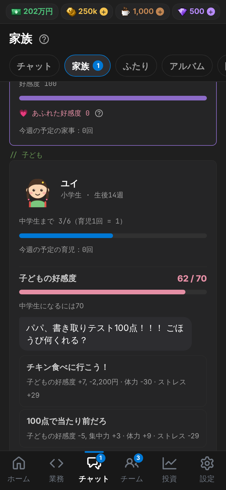
- 育児は週2日で十分です。それ以上は幼稚園、小学校が少し早くなるだけで、大学は子どもの好感度（30 → 110）のせいで16週より早くなりません。
- そのかわり子どものメッセージは必ず①。②1回（−5）や既読スルー（−8）が①の1〜2回分を吹き飛ばします。
- ①の返信は体力 −30〜−40、ストレス +20〜+30と重いです。実際の周回では育児、家事が6枠まで重なって燃え尽きの週ができ、大学まで16週よりかなり長くかかります。休む週は育児も子どものメッセージも止まります。
- だから子どものエンディングを狙うなら、赤ちゃんをできるだけ早く産んで、周回の終わりまで時間をたっぷり残しておきましょう。
子どものエンディング 🎓#
子どもが幼稚園、小学校、中学校、高校、大学に入るたびに、子どもが自分でメッセージを送ってきます（必ず答えてください）。選んだ答えが積み重なって、最後の大学のメッセージで子どものエンディングが1つ決まります。第100週にも結婚中でないと記録されません。
- 留学した子の親孝行: 大学のメッセージで留学させてあげればOK。大金がかかります。
- 道をそれた子: 厳しく育てたり甘やかしたりした子が留学できないと出ます。
- 2代目の開発者: 小さいころから一緒にコーディングした子です。
- 自由な魂: やりたいように遊ばせた子です。
- 自力で立った子: いちばん難しいエンディングです。
子どものエンディングは周回ごとに1つなので、5つ全部見るには5周回必要です。
家族アルバム 📷#
メッセンジャーの上の行のアルバムは赤ちゃんが生まれると開きます。その前は🔒 子育てが始まると開きます。赤ちゃんが生まれると、片想いから今までの写真がアルバムになります。と見えます。ひらくを押すと本のページをめくるように1枚ずつめくれ、写真ごとにその日のひとこととママのひとことが付いています。
| ページ | 枚数 | 決まり方 |
|---|---|---|
| 片想い、交際、結婚 | 各1枚 | 各10種類のうち今の周回で1枚（周回ごとに変わり、重なることもあります） |
| 赤ちゃん誕生 | 1枚 | 固定 |
| 幼稚園、小学校、中学校、高校 | 各1枚 | その段階の子どものメッセージで選んだ答えの写真（各3種類） |
| 大学 | 1枚 | 行かせる → 空港 / 断る → 閉じたドア |
| おわり | 1枚 | 大学の選択のあと、その周回の子どものエンディングのハンコ |
1周回の写真は最大9枚（+ おわり）で、写真の種類は全部で45枚です（片想い10、交際10、結婚10、赤ちゃん1、子ども14）。大学の選択をするとアルバムが1回ひとりでに開き、最後のページをめくると子どもはもう大学生になりました。アルバムはここまでです。で閉じます。
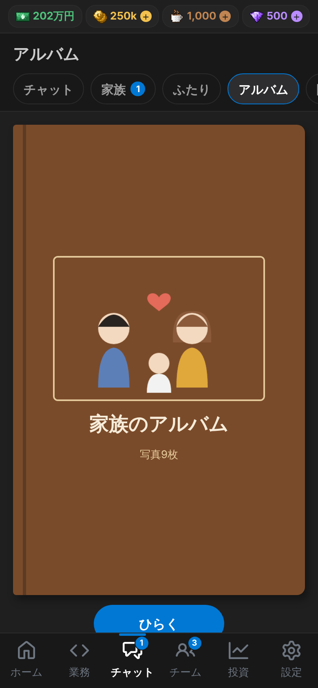
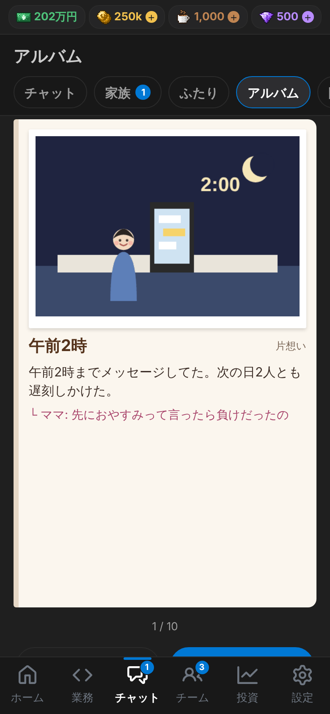
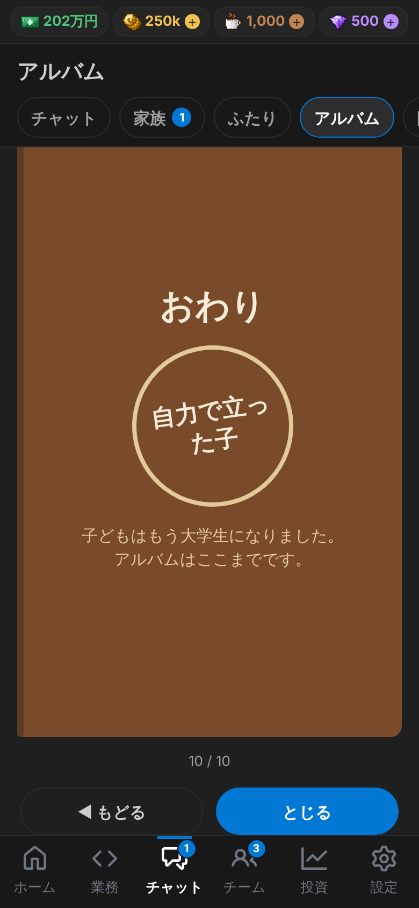
アルバムはその周回の記録なので、次の周回は空のアルバムからです。周回を越えて写真を集めておく機能はありません。離婚すると子どもと一緒に子どもの写真も消えます。写真45枚を全部見たいなら、周回ごとに幼稚園、小学校、中学校、高校の答えを変えてみましょう（3周回で学校の写真12枚を全部見られます）。
別れ、離婚、結婚後の出来事 💔#
交際中の別れ#
- デート0回の週: 好感度 −30 + 今週一回も会えなかったね…最近ちょっと寂しいよ。（ごめん。来週は絶対デートしよう（ストレス +20） +2 / 最近仕事が忙しすぎて… −8）
- 好感度0: このまま付き合い続けていいのかな。別れよう。 → 引き止める（プレゼント -5.6万円、体力 -20、ストレス +30） 30%で成功（+8）/ わかった。今までありがとう 別れ。既読スルーは同意として扱われます。
結婚中の離婚#
妻の好感度が0になるともう疲れた。離婚しよう。が来ます。
| 返信 | 結果 |
|---|---|
| 引き止める（花と手紙、旅行 -11.1万円、体力 -20、ストレス +30） | 30%で成功: 好感度 +8 …もう一回だけ信じてみる。 / 70%で失敗: 11.1万円は出ていき離婚 |
| …わかった | 離婚 |
| （既読スルー） | 離婚 |
- その周回では新しい出会いが生まれません。子ども、育児の枠、子どもの写真も彼女と一緒に去ります。
- 周回が終わるまで評判0固定、ストレスは最低70から下がらない、集中力は上がらない。評判が必要なキャリアのエンディング（CTO就任など）は事実上ふさがります。
- 100週を最後まで終えると離婚のエンディングが記録され、結婚、同棲、新婚、好み、子どものエンディングはすべて無効です。
- 条件
- 結婚中に家事（子どもがいれば育児も）0回の週ごとに −30 → 好感度0 → 離婚のメッセージで…わかったか既読スルー、または引き止めるの失敗 → その状態で100週を完走
- 報酬
- ノーマルパック1
- ヒント
- 図鑑用に狙うなら、結婚直後に家事を全部オフにすればOK。その周回のほかの成果はあきらめましょう。
- 条件
- 赤ちゃんが生まれてから8週以上たち、そのすべての週に育児4日以上（1週でも3日以下ならその周回では不可）。燃え尽き、病欠で休む週は数えません
- 報酬
- ノーマルパック1
- ヒント
- 子どものエンディングと一緒に狙いやすいです。育児4枠 + 業務2枠で固定しておきましょう。
家族のエンディングの総まとめ 📖#
同棲、新婚、好みのエンディングはそれぞれエピックパック1、子ども、内助の功、離婚はノーマルパック1です。すべて第100週にその状態でないと記録されず、1周回で結婚 + 同棲 + 新婚 + 好み + 子ども + 内助の功が同時に記録されます。
| ヒロイン | 同棲エンディング | 新婚エンディング |
|---|---|---|
| 美咲 | 美咲とひとつ屋根の下 | 美咲と高い天井の下の新婚 |
| 彩花 | 彩花の同棲企画書 | 彩花の完璧な動線 |
| 七海 | 七海とデュオで | 七海と海の見える新婚 |
| 莉子 | 莉子の研究室のそばのワンルーム | 莉子と学会の代わりに新婚旅行 |
| 優奈 | 優奈との朝のルーティン | 優奈のペントハウスの朝 |
| 葵 | 7年越しの同じ玄関 | 葵の庭のある家 |
| 穂乃果 | 穂乃果のバグのない家 | 穂乃果の通勤5分の新婚 |
| 美桜 | 美桜と初コミットみたいな同棲 | 美桜とログハウスの新婚 |
| 真由 | 真由と深夜3時の家 | 真由と湖畔の静かなデプロイ |
| 新婚エンディング | 条件 |
|---|---|
| 美咲と高い天井の下の新婚 | 結婚 → 15週以内に夢の家 → 新婚の提案を承諾 → 第100週にも結婚中 |
| 彩花の完璧な動線 | 同じ |
| 七海と海の見える新婚 | 同じ |
| 莉子と学会の代わりに新婚旅行 | 同じ |
| 優奈のペントハウスの朝 | 同じ |
| 葵の庭のある家 | 同じ |
| 穂乃果の通勤5分の新婚 | 同じ（開発系インフルエンサーの称号） |
| 美桜とログハウスの新婚 | 同じ（開発系インフルエンサーの称号） |
| 真由と湖畔の静かなデプロイ | 同じ（開発系インフルエンサーの称号） |
同棲エンディングの条件: 交際中に家（ワンルームから）を持って同棲の提案を承諾 → 第100週に同棲中か結婚中。好みのエンディング6つは上のカード、結婚エンディングはそれぞれのヒロインの攻略にあります。
よくある質問#
- 同棲の提案を断ったけど、またもらえますか？
- その周回では来ません。次の周回にまた来ます。断っても新婚は夢の家さえあれば別にできます（同棲エンディングと半額がないだけです）。
- 家を買ったのに同棲の提案が来ません。
- 買った週には来ず、買った週の翌週の終わりに来ます。また店舗、物流倉庫、リゾート、農地は家ではありません。ワンルーム、オフィステル、マンション、田舎の家/別荘である必要があります。
- 楓と結婚したのにふたりが開きません。
- 楓、ソフィー、紗希、麗華には同棲、新婚、育児がありません。
- 新婚が終わると特典も終わりますか？
- 新婚のセリフは15週で終わりますが、赤ちゃんまで家事半分の特典は赤ちゃんができるまで残ります。同棲していたら半額も続きます。
- 子どもが幼稚園児から育ちません。
- 子どもの好感度が足りないんです。家族タブの子どものカードの下のメッセージに①で答えましょう。②や既読スルーが多いと永遠に育ちません。
- 育児をたくさんすれば早く育ちますか？
- 週2日以上なら大学まで子どもの好感度がボトルネックなので、これ以上早くなりません。ただし家庭を支える夫は毎週4日が必要です。
- アルバムの写真は次の周回に残りますか？
- いいえ、アルバムは周回ごとに新しく始まります。
- 家事を忘れました。すぐ離婚ですか？
- いいえ。1週 −30（あふれた好感度から減る）で、好感度が0にならないと離婚の話は来ません。そのときも引き止める 30%があります。